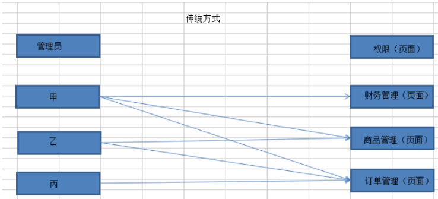
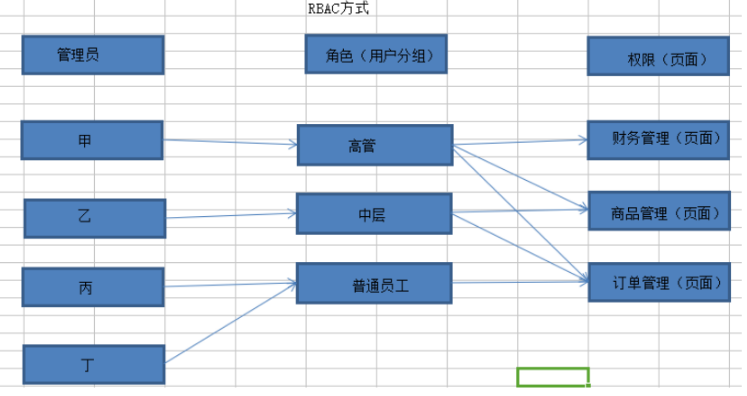
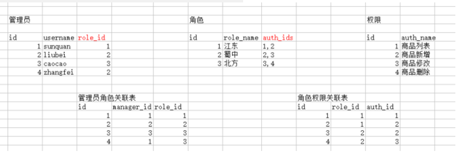

1.RBAC概念和原理
RBAC：全称叫做Role-Based Access Control，中文翻译叫做基于角色的访问控制。其主要的作用是实现项目的权限控制。
效果：让不同的管理员，能够访问的页面不一样。比如运营人员 只能看到运营相关模块。财务人员只能看到财务相关模块。
传统权限管理：

RBAC权限管理：

RBAC权限管理：
新增管理员，只需要指定角色，即可拥有对应的权限。
2.数据表设计：
基本数据表：管理员表、角色表、权限表
对应关系：管理员对应一个角色，一个角色对应多个权限。（一个管理员也可以对应多个角色）
对应关系的维护：
第一种：三表结构，在管理员表增加角色id字段，在角色表增加权限ids字段，最终三张表。
第二种：五表结构，新增一张管理员角色关联表，新增一张角色权限关联表。最终五张表。

查询一个管理员拥有的权限：
先查询管理员表，获取到角色id
再查询角色表，获取到拥有的权限ids
最后根据权限ids查询权限表，where id in（1,2,3）